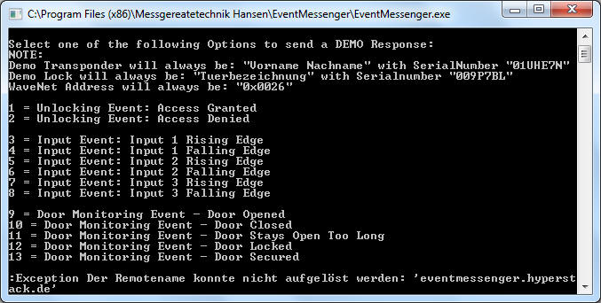

Main Window - Debug Console

The Debug Console could be used to generate virtual locking system events
without having a real setup. Thus, giving the ability to the user to validate
the project setup within the EventMessenger application.
The EventMessenger is capable of handling three different types of locking
system events:
- "Unlocking Events"
- A transponder has been used on a lock with a "WaveNet" connection to
the LSM.Basic.Online Software. This could be either result in an "access
granted" or "access denied" by the lock. The virtual transponder and
lock will always have a fixed name and serial number.
- "Input Events"
- A "WaveNetManager RouterNode with IO functions" has three physical
inputs. The EventMessenger software could be used to determine if there
were changes on the potentials of these inputs.
- "Door Monitoring Events"
- A special kind of SimonsVoss Lock called "DoorMonitoring Lock" has
abilities to determine if there were chages on the doorstatus itself.
That means the Lock could inform wether the door is in an opened, closed
or locked state.
 BE
AWARE: The EventMessenger won't be able to retrieve events from the Locking
Management System Software as long as the Console Window will be opened at
application start. Please disable the console and restart the application to
retrieve messages from the locking system software.
BE
AWARE: The EventMessenger won't be able to retrieve events from the Locking
Management System Software as long as the Console Window will be opened at
application start. Please disable the console and restart the application to
retrieve messages from the locking system software.